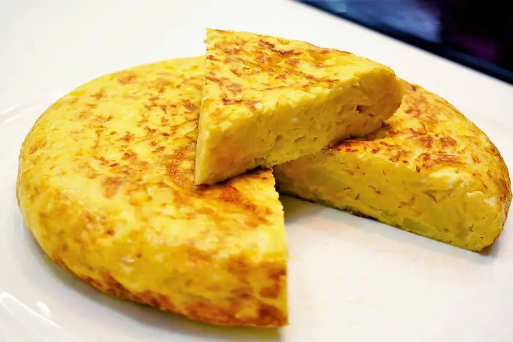

Potato Omelette

Spanish "tortilla de patatas" potato omelette
Tasty potato omelette always make people go totally crazy over how good it is
Ingredients
- Potatoes
- Oil
- Eggs
- Obviously not onion, or yes if you like it
Steps
- Open the eggs and shake them until you get an even liquid
- Cut and fry the potatoes
- Pour the beaten eggs over the fried potatoes and heat it until its cooked, preferably not so much inside so some of the egg doesn't solidify